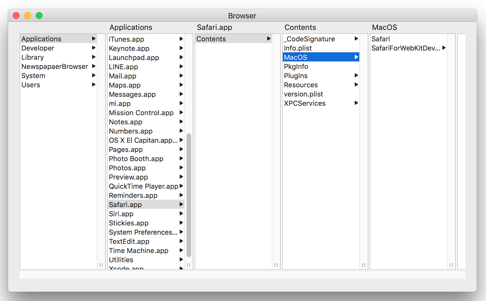

ブラウザ（NSBrowser）の基本
最小のコーディングで、ブラウザにディレクトリパスを表示するFinderもどきアプリケーションを作成してみる。

階層化したデータがブラウザに表示されるイメージ
インタフェースビルダ
Xcode
NSBrowserDelegateプロトコルに準じたデリゲートメソッドを実装する。実装方法は２種類あるが、結果は全く同じである。
デリゲートメソッドは、システムが必要性を自動的に判定して起動する。アプリケーションは引数の情報（列や行の位置）に応じて、適当なデータをセットするだけで良い。
デリゲートメソッドの実装 Matrix based delegate方式
プロパティ宣言とブラウザの初期処理（AppDelegateクラス）
① browser:numberOfRowsInColumn:
引数に渡された列の行数（ノード数）を返す。
② browser:willDisplayCell:atRow:column:
引数に渡された行・列に対応したノード（セル）に表示内容をセットする。
指定したパスの直下のファイル/ディレクトリを取得する。
上記のデリゲート①から呼ばれる。この処理は、特定の列にある全ノードを取得する処理に相当する。
パフォーマンス上の考慮点
デリゲート①の直後に、デリゲート②が必ず起動することが明らか（と思われる）ので、デリゲート①で取得したノード情報（_arrayOfURLプロパティ）をデリゲート②で参照している。これにより、NSFileManagerのシステムコールの回数が減るので、いくらかはパフォーマンスの向上が見込める。
ただし、デリゲートが起動されるタイミングは、本来不可知なので、理屈としてはデリゲート②においても、ファイル/ディレクトリを取得する処理を呼ぶべきであろう。では、これを複数呼んだ場合どの程度処理時間が伸びるのか？
A. 本アプリケーションの方式なら１回
B. それぞれのメソッドで呼ぶ方式なら、1＋ノード数N 回
簡単にベンチマークを行ってみたが、結論からいうと、キャッシュの効果により、処理時間の差は回数に比例して大きくなることは全くなく、回数を減らすために無理に策を弄する必要はないと考える。あるケースでは、100回多く呼んでも、トータルの処理時間は、90ミリ秒から140ミリ秒と、1.5倍程度であった。（これをどう評価するかはアプリケーションの要求次第だが）
デリゲートメソッドの実装 Item based delegate方式
ファイルシステムのパスをノードオブジェクトの構造として表す。
ノードの定義
① rootItemForBrowser:
ルートノードを作成して返す。childrenプロパティには、ルート直下のパスから子ノードを作成してセットする。
② browser:numberOfChildrenOfItem:
指定されたノードが持つ子ノードの数を返す。
③ browser:child:ofItem:
指定されたノードのインデックス番目の子ノードを返す。
この時点では子ノードのchildrenプロパティは初期状態。子ノードのパスがディレクトリであれば直下のパスを取得、孫にあたるノードを作成し、childrenプロパティにセットしノードを完成させる。
④ browser:objectValueForItem:
指定されたノードの表示文字列を返す
⑤ browser:isLeafItem:
指定されたノードがファイル（リーフ）かディレクトリかを返す
指定したパスの直下のパス（ファイル/ディレクトリ）の一覧を求める